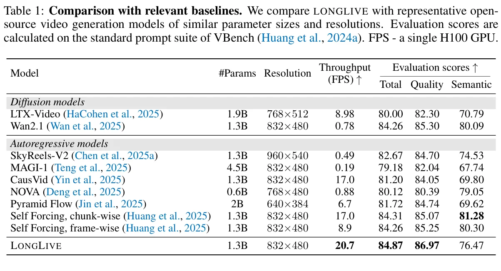
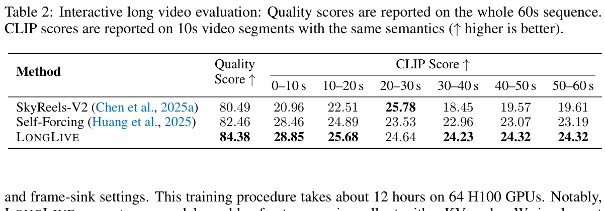
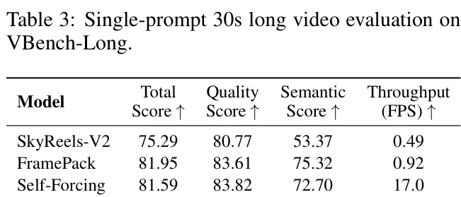
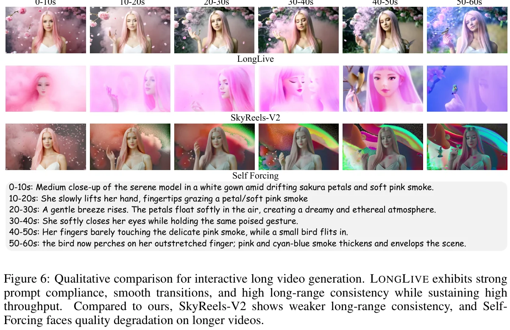
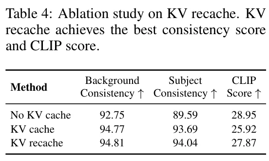
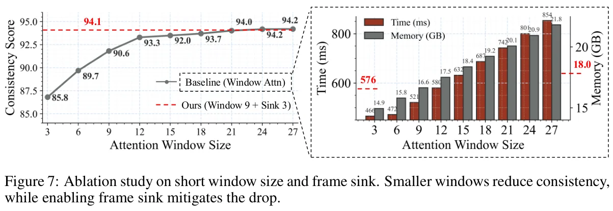
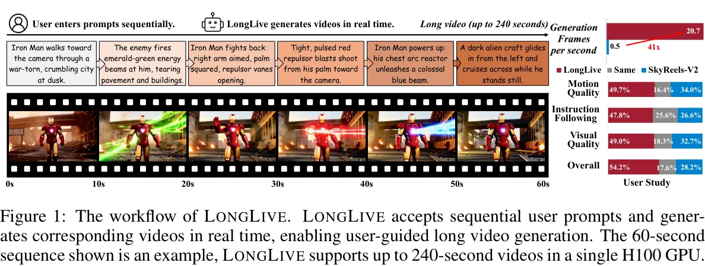
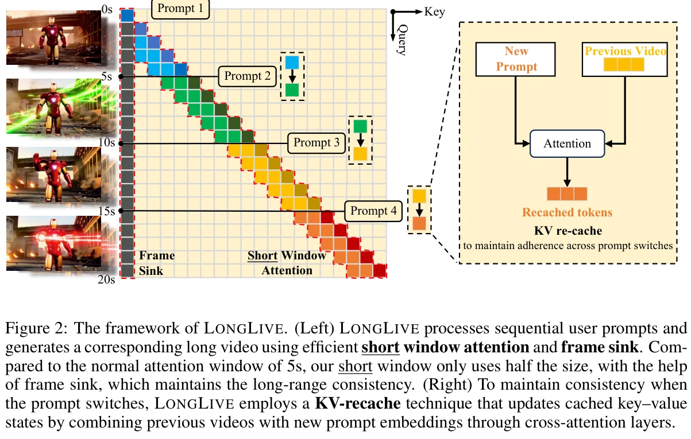

长视频生成的双重困境：效率与质量
长视频生成是推进创意、教育和影视应用的关键技术。然而，现有方法在效率和质量两个维度上都面临根本性挑战。扩散模型和Diffusion-Forcing模型能生成高质量短视频，但双向注意力机制使其无法利用KV Cache，推理效率极低。因果注意力AR模型支持KV Cache加速推理，但在长视频上质量严重退化。
困境一：效率困境
双向注意力模型（如Wan2.1）在生成180秒视频时需要处理超过100万token。以SkyReels-V2为例，生成60秒视频在H100上需要约50分钟，完全无法满足实时交互需求。双向注意力阻止了KV Cache技术的使用，导致大量冗余计算和不可接受的延迟。
困境二：质量困境
现有因果AR模型（如Self-Forcing、MAGI-1）通常采用train-short-test-long策略——仅在短片段上训练，推理时生成长视频。由于缺乏对自生成退化上下文的训练暴露，小误差逐步累积，导致内容漂移和时序一致性断裂。
在交互式设置中，用户在生成过程中实时输入新prompt进行语义切换。这不仅要求视觉风格、运动连续性和场景布局的平滑过渡，还要求模型能快速遵循新指令。Prompt切换时旧prompt信息残留在KV Cache中，导致新prompt被忽略或延迟响应，进一步加剧了质量困境。
Diffusion模型
双向注意力，高质量但极慢。Wan2.1: 0.78 FPS，SkyReels-V2: 60秒需50分钟。无法利用KV Cache
现有AR模型
支持KV Cache加速，但train-short-test-long策略导致长视频质量退化。Self-Forcing: 5秒训练视野
LongLive
因果注意力+KV Cache，20.7 FPS实时推理。KV-Recache+Streaming Tuning保证240秒高质量生成
LongLive的核心发现是：通过精心设计的训练策略（Streaming Long Tuning）和推理优化（短窗口注意力+Frame Sink），因果AR模型可以同时实现高速推理和高质量长视频生成。关键在于训练-推理一致性——用train-long-test-long替代train-short-test-long，使模型在训练时就暴露于自生成的退化上下文。
KV-Recache — 交互式Prompt切换的关键
在交互式长视频生成中，用户可能在生成过程中随时输入新prompt来引导叙事方向。这要求模型在prompt切换时既能平滑过渡（保持视觉连续性），又能快速遵循新指令（语义对齐）。然而，简单的KV Cache策略无法同时满足这两个需求。
为什么Prompt切换如此困难？
在DiT架构中，cross-attention和self-attention层交替工作。生成过程中，旧prompt的信息通过cross-attention层反复注入，并通过self-attention层前向传播，被写入运行中的KV Cache。当prompt切换时，Cache中仍携带旧prompt的残余语义，导致新prompt被忽略或延迟响应。
三种KV Cache策略对比
(a) 无KV Cache
切换时清空整个Cache。新prompt立即生效，但过渡突兀且视觉不连贯。Background Consistency: 92.75
(b) 保留KV Cache
切换时保留完整Cache不变。过渡平滑，但新prompt不被遵循（延迟或忽略）。CLIP Score: 25.92
(c) KV-Recache
用已生成帧+新prompt重新计算KV Cache。平滑过渡+完全遵循新prompt。CLIP Score: 27.87
KV-Recache机制详解
KV-Recache的核心思想是：在prompt切换边界，不丢弃Cache也不原封不动保留，而是用已生成的视频帧作为视觉上下文，搭配新prompt通过cross-attention层重新构建KV Cache。这样既保留了运动和视觉线索（时间连续性），又清除了旧prompt的语义残余。
其中 $v_{1:t}$ 是已生成的视频帧序列，$p_{\text{new}}$ 是新prompt。此操作在prompt切换时仅执行一次，额外时间开销约6%（10秒视频含一次切换）。
论文的一个关键观察是：虽然训练时仅包含一次prompt切换，但推理时的多次切换通过在每个切换边界执行单次recache来处理。每次recache都用最近的W帧已生成视频+新prompt重建Cache，模型因此能在任意切换点实现平滑语义转换。实验表明recache的额外成本极小（约6%时间开销），且随切换次数线性增长，不会成为瓶颈。
MAGI-1在prompt切换时需要手动调整KV Cache窗口的不同步骤，增加了使用复杂度。LongLive的KV-Recache则完全自动化——在切换边界自动执行recache，无需用户干预。这种设计哲学的差异反映了"自动化交互"与"手动配置"之间的取舍，LongLive选择了前者以支持真正的实时交互式生成。
Streaming Long Tuning — 训练-推理对齐
现有因果AR视频模型仅在短片段上训练（如Self-Forcing的5秒教师视野），推理时通过滚动固定长度上下文窗口生成长视频。随着rollout继续，小预测误差累积，窗口内的上下文变得越来越退化。由于训练时从未见过这种自生成的、逐步退化的长程上下文，train-short-test-long策略导致内容漂移和一致性断裂。
Naive Long Tuning的两个挑战
直接在长视频上训练面临两个实际困难：
挑战一：教师监督不正确 — 教师模型本身在短片段上训练，无法可靠地对整个长序列提供端到端监督。
挑战二：OOM — 对长序列进行朴素的反向展开和反向传播极易导致内存溢出，且计算浪费严重。
Streaming Long Tuning方案
LongLive引入流式长调优策略，在长视频上训练的同时保持内存和监督的局部性和可靠性。
关键设计：
1. 滚动5秒片段：每次迭代用KV Cache中存储的历史生成下一个5秒片段。
2. Detach历史帧：已生成的帧作为因果上下文，但梯度仅计算当前片段。
3. DMD监督：教师模型仅对当前5秒片段提供监督（在其能力范围内）。
4. 重启策略：视频达到预设最大长度后，获取新batch从头开始。
如果不detach历史帧，梯度会通过整个60秒序列反向传播，不仅导致OOM，更重要的是教师监督变得不正确——教师仅在5秒片段上训练，无法为60秒序列的中间帧提供有意义的梯度信号。Detach操作使历史帧成为"常量因果上下文"，教师对每个5秒片段的监督都是可靠的（在其能力范围内），而所有片段的局部监督汇总为全局指导。
LongLive的Streaming Long Tuning与Self-Forcing++的Extended DMD共享同一个核心思想：train-long-test-long。两者都让模型在训练时暴露于自生成的长rollout。但实现方式不同：Self-Forcing++使用滑动窗口采样+反向噪声初始化；LongLive使用滚动5秒片段+DMD监督。LongLive的方法更简洁，额外集成了KV-Recache和短窗口注意力，训练总成本仅32 GPU-days。
短窗口注意力 + Frame Sink — 效率优化
在长视频生成中，密集因果注意力的计算成本随序列长度二次增长，使得朴素推理在长视频上不可行。论文从视频生成中时间局部性的证据出发——相邻帧对预测下一帧的贡献更大——采用局部窗口注意力来降低复杂度。
短窗口注意力的质量-效率权衡
限制注意力到固定时间窗口将复杂度从 $O(L)$ 降低到 $O(W)$，其中 $L$ 是序列长度，$W$ 是窗口大小。但窗口大小引入了权衡：
大窗口保留更多时序上下文，产生更强的长程一致性，但延迟和内存更高。小窗口提高效率但一致性下降——远距离但关键的线索从感受野中消失。
Frame Sink：全局锚点帧
论文发现：单独的短窗口注意力确实会降低长程一致性。但加入Frame Sink机制后，一致性可以恢复到大窗口水平，同时保持小窗口的效率优势。
Frame Sink的核心设计：
1. 固定第一帧chunk作为全局Sink Token。
2. 永不驱逐Sink Token，永久保留在KV Cache中。
3. 全局可参与：Sink Token被拼接到每个attention层的Key和Value上，使其在局部窗口注意力下仍可被全局访问。
4. 滚动窗口Cache的其余部分正常淘汰（FIFO）。
LLM研究中发现Attention Sink现象——模型倾向于将不成比例的注意力分配给初始token，即使这些token语义上不重要。LongLive将此洞察迁移到视频生成：将第一帧chunk固定为Sink Token，作为永久的全局锚点。与Self-Forcing++不使用sink而依赖扩展训练不同，LongLive通过Streaming Long Tuning + Frame Sink的组合，在更小的训练预算（32 GPU-days vs Self-Forcing++的25x扩展）下实现了可比的长视频质量。
论文发现了一个关键的顺序依赖：单独使用attention sink不能防止长rollout崩溃，但先通过Streaming Long Tuning解决崩溃问题后，sink变得有效。这是因为未经过长视频训练的模型在长rollout中会产严重退化，sink token无法挽救已经崩溃的生成。只有在模型学会处理自生成退化上下文后，sink才能作为稳定的全局锚点发挥作用。
代码实现解析
LongLive基于Wan2.1-T2V-1.3B构建，使用Self-Forcing DMD pipeline初始化为因果注意力模型。以下代码实现基于论文方法描述和官方代码仓库分析。
1. KV-Recache 实现
def kv_recache(self, generated_frames, new_prompt, kv_cache):
"""KV-Recache: 在prompt切换边界重建KV Cache
Args:
generated_frames: 已生成的视频帧 [B, T, C, H, W]
new_prompt: 新的文本prompt
kv_cache: 当前KV Cache
Returns:
recached_kv: 用新prompt重建的KV Cache
"""
# Step 1: 编码已生成帧为视觉上下文
visual_context = self.visual_encoder(generated_frames)
# Step 2: 编码新prompt为文本嵌入
text_embedding = self.text_encoder(new_prompt)
# Step 3: 通过cross-attention重建KV Cache
# 核心：视觉上下文保留运动/视觉线索
# 新prompt覆盖旧语义
recached_kv = []
for block_idx, block in enumerate(self.transformer_blocks):
# Cross-attention: visual_context × text_embedding
new_k = block.cross_attn.k_proj(
torch.cat([visual_context, text_embedding], dim=1)
)
new_v = block.cross_attn.v_proj(
torch.cat([visual_context, text_embedding], dim=1)
)
recached_kv.append({"k": new_k, "v": new_v})
return recached_kv可信度：示意性实现。基于论文Section 3.1的描述和DiT架构的cross-attention机制推导，具体实现细节参考官方代码。
2. Streaming Long Tuning 训练循环
def streaming_long_tuning(self, prompts, max_length=60, clip_len=5):
"""Streaming Long Tuning: 在长视频上训练
关键：每次迭代生成下一个5s clip，detach历史帧
"""
kv_cache = self.init_kv_cache()
total_loss = 0
# 第一次迭代：从零生成第一个clip
clip_1 = self.generate_clip(
prompt=prompts[0], kv_cache=kv_cache, duration=clip_len
)
loss_1 = self.compute_dmd_loss(clip_1, prompt=prompts[0])
total_loss += loss_1
# 后续迭代：基于历史KV Cache滚动生成
current_length = clip_len
prompt_idx = 0
while current_length < max_length:
# 检查是否需要prompt切换
if self.should_switch_prompt(current_length):
prompt_idx += 1
# KV-Recache: 用已生成帧+新prompt重建Cache
kv_cache = self.kv_recache(
self.generated_history, prompts[prompt_idx], kv_cache
)
# Detach历史帧：梯度不回传到之前生成的帧
with torch.no_grad():
self.detach_kv_cache(kv_cache) # 关键操作
# 生成下一个clip（保留梯度）
next_clip = self.generate_clip(
prompt=prompts[prompt_idx],
kv_cache=kv_cache,
duration=clip_len
)
# DMD监督：教师仅对当前clip提供监督
clip_loss = self.compute_dmd_loss(
next_clip, prompt=prompts[prompt_idx]
)
total_loss += clip_loss
current_length += clip_len
return total_loss可信度：示意性实现。基于论文Section 3.2的Streaming Long Tuning描述和Algorithm 1推导。
3. Frame Sink 注意力实现
class FrameSinkAttention:
"""短窗口注意力 + Frame Sink
将第一帧chunk作为全局Sink Token，永不驱逐。
滚动窗口Cache的其余部分正常FIFO淘汰。
"""
def __init__(self, window_size=9, sink_frames=3):
self.window_size = window_size # 滚动窗口大小
self.sink_frames = sink_frames # Sink帧数(第一帧chunk)
self.sink_kv = None # 全局Sink KV (永不驱逐)
self.window_kv = None # 滚动窗口KV
def update_and_attend(self, query, new_kv, frame_idx):
"""更新KV Cache并执行注意力计算"""
# 初始化：前sink_frames帧作为Sink Token
if frame_idx < self.sink_frames:
if self.sink_kv is None:
self.sink_kv = new_kv
else:
self.sink_kv = torch.cat(
[self.sink_kv, new_kv], dim=1
)
return standard_attention(query, self.sink_kv)
# 后续帧：维护滚动窗口
if self.window_kv is None:
self.window_kv = new_kv
else:
self.window_kv = torch.cat(
[self.window_kv, new_kv], dim=1
)
# FIFO淘汰：保持窗口大小
if self.window_kv.shape[1] > self.window_size:
self.window_kv = self.window_kv[:, -self.window_size:]
# 拼接Sink + Window，全局可参与
combined_k = torch.cat(
[self.sink_kv["k"], self.window_kv["k"]], dim=1
)
combined_v = torch.cat(
[self.sink_kv["v"], self.window_kv["v"]], dim=1
)
return standard_attention(query, combined_k, combined_v)可信度：示意性实现。基于论文Section 3.3的Frame Sink描述推导，展示了Sink Token的固定和滚动窗口的FIFO淘汰逻辑。
论文指出每步的resident KV大小为 $O(W+T+S)$，其中 $W$ 是上下文窗口、$T$ 是监督clip长度、$S$ 是Sink Token数。这个大小不随总视频长度增长，从而避免了OOM。这是Streaming Long Tuning能在60秒甚至240秒视频上训练的关键——内存使用被clip时长限制，而非整个视频长度。
实验结果
LongLive基于Wan2.1-T2V-1.3B构建，产生832x480分辨率、16 FPS的5秒片段。首先使用Self-Forcing DMD pipeline将预训练模型适配为few-step因果注意力模型，然后执行Streaming Long Tuning（60秒序列含一次prompt切换）。训练在64块H100 GPU上耗时约12小时（32 GPU-days）。
短视频VBench评估（Table 1）

| 模型 | 参数量 | 分辨率 | FPS ↑ | Total ↑ | Quality ↑ | Semantic ↑ |
|---|---|---|---|---|---|---|
| Wan2.1 (原始) | 1.3B | 832x480 | 0.78 | 84.26 | 85.30 | 80.09 |
| SkyReels-V2 | 1.3B | 960x540 | 0.49 | 82.67 | 84.70 | 74.53 |
| CausVid | 1.3B | 832x480 | 17.0 | 81.20 | 84.05 | 69.80 |
| Self-Forcing (chunk) | 1.3B | 832x480 | 17.0 | 84.31 | 85.07 | 81.28 |
| Self-Forcing (frame) | 1.3B | 832x480 | 8.9 | 84.26 | 85.25 | 80.30 |
| LongLive | 1.3B | 832x480 | 20.7 | 84.87 | 86.97 | 76.47 |
在5秒短视频上，LongLive以84.87 Total分和86.97 Quality分取得最佳成绩，同时以20.7 FPS的速度成为所有方法中最快的。这证明LongLive的优化策略不会损害短视频生成能力。
交互式长视频评估（Table 2）

| 方法 | Quality ↑ | 0-10s | 10-20s | 20-30s | 30-40s | 40-50s | 50-60s |
|---|---|---|---|---|---|---|---|
| SkyReels-V2 | 80.49 | 20.96 | 22.51 | 25.78 | 18.45 | 19.57 | 19.61 |
| Self-Forcing | 82.46 | 28.46 | 24.89 | 23.53 | 22.96 | 23.07 | 23.19 |
| LongLive | 84.38 | 28.85 | 25.68 | 24.64 | 24.23 | 24.32 | 24.32 |
在交互式60秒视频评估中，LongLive在Quality Score和所有时间段的CLIP Score上均取得最佳成绩。CLIP Score随时间稳定在24-28，展示了出色的长程一致性。
长视频VBench-Long评估（Table 3）

| 模型 | Total ↑ | Quality ↑ | Semantic ↑ | FPS ↑ |
|---|---|---|---|---|
| SkyReels-V2 | 75.29 | 80.77 | 53.37 | 0.49 |
| FramePack | 81.95 | 83.61 | 75.32 | 0.92 |
| Self-Forcing | 81.59 | 83.82 | 72.70 | 17.0 |
| LongLive | 83.52 | 85.44 | 75.82 | 20.7 |
在30秒单prompt长视频上，LongLive同样取得SOTA性能，同时保持最快的推理速度。
实时推理
单GPU支持
训练成本
vs SkyReels-V2

论文发现了一个重要洞察：Streaming Long Tuning不仅是提升长视频生成质量所必需的，还是短窗口注意力和Frame Sink等高效推理策略能够生效的前提条件。未经长视频训练的模型在使用短窗口时会立即崩溃；经过训练后，模型学会了处理退化上下文，短窗口+Sink的组合才能真正发挥作用。
消融研究
KV-Recache 消融（Table 4）
在10秒视频（5秒处一次prompt切换）设置下，比较三种KV Cache策略：

| 方法 | Background Consistency ↑ | Subject Consistency ↑ | CLIP Score ↑ |
|---|---|---|---|
| No KV cache (清空Cache) | 92.75 | 89.59 | 28.95 |
| KV cache (保留Cache) | 94.77 | 93.69 | 25.92 |
| KV recache (重缓存) | 94.81 | 94.04 | 27.87 |
消融结果揭示了一个清晰的权衡：无KV Cache方案的CLIP Score最高（28.95），因为新prompt立即生效，但一致性最差（92.75/89.59）因为视觉突变。保留KV Cache方案的一致性高（94.77/93.69），但CLIP Score最低（25.92）因为新prompt被忽略。KV-Recache同时获得高一致性（94.81/94.04）和较高CLIP Score（27.87），成功实现了"平滑过渡+新prompt遵循"的两全。
短窗口注意力 + Frame Sink 消融（Figure 7）

在10秒生成设置下，变化局部注意力窗口从3到27个latent frames：
关键发现：一致性随窗口增大而提升，约在24帧窗口处饱和。但Window 9 + Sink 3（有效窗口12）的一致性接近Window 21，同时保持了短窗口的效率优势。这表明Frame Sink机制可以将所需窗口大小减半以上而不损失质量。
消融显示Window 3的一致性最低（即使加Sink），说明最低限度的局部上下文是必要的。Sink Token提供的是"全局身份锚点"而非"局部运动信息"。运动连续性仍然需要足够的局部帧来建模。Window 9（约2.25秒的局部上下文）恰好提供了足够的运动建模能力，而Sink负责更长程的一致性。
局限与未来方向
当前局限
1. Semantic Score偏低：LongLive的短视频Semantic Score（76.47）低于Self-Forcing（81.28/80.30）。这可能源于短窗口注意力限制了对远距离语义信息的访问。
2. INT8量化的质量损失：虽然INT8量化将KV Cache从2.7GB压缩到1.4GB（2倍压缩），但仍存在边际质量损失。在对质量要求极高的场景中，这可能是不可接受的。
3. 训练数据构造依赖：Switch-prompt数据集需要通过Qwen2-72B-Instruct生成follow-up prompts，增加了数据准备的复杂度和外部依赖。
4. 单GPU内存限制：虽然支持240秒视频生成，但更长的视频仍受限于单GPU内存。未来需要探索分布式或offloading策略。
LongLive在效率（20.7 FPS）和交互性（KV-Recache）上取得了显著进步，但质量上的权衡仍然存在。特别是与Wan2.1原始双向模型相比，因果化和窗口化不可避免地损失了部分全局建模能力。未来工作需要在不牺牲效率和交互性的前提下恢复这些能力，可能的方向包括：自适应窗口大小、基于重要性的稀疏注意力、或轻量级全局记忆模块。
未来方向
1. 分布式长视频训练：当前Streaming Long Tuning在单GPU上训练，视频长度受内存限制。探索pipeline或tensor parallelism可支持更长的训练序列。
2. 自适应窗口大小：当前窗口大小固定。根据视频内容动态调整窗口（如快速运动场景用大窗口，静态场景用小窗口）可能进一步优化效率-质量权衡。
3. 多模态交互：当前仅支持文本prompt切换。扩展到语音、手势或草图等多模态输入将使交互更加自然。
4. 更大模型扩展：LongLive的1.3B参数模型在质量上仍有提升空间。将方法扩展到7B+参数模型可能带来显著的质量提升。
自主科研问题
KV-Recache能否推广到多模态prompt切换？
当前KV-Recache仅处理文本prompt切换。如果用户在生成过程中提供参考图像、音频片段或草图，recache操作需要如何调整？研究方向：探索cross-attention层对多模态输入的联合编码，以及不同模态在recache时的权重分配策略。这可能涉及模态特定的KV Cache刷新率——视觉信息可能需要更频繁的更新，而音频信息可以跨更长时间段保持稳定。
Streaming Long Tuning的最优clip长度是多少？
论文固定clip长度为5秒（与教师视野一致）。但如果clip长度可以变化呢？理论分析：短clip提供更密集的监督信号但增加迭代次数；长clip减少迭代但教师监督可靠性下降。可能存在一个课程学习策略——训练初期使用短clip快速收敛，后期使用长clip学习更长范围的依赖。这与Self-Forcing++的Extended DMD中窗口大小的讨论形成呼应。
Frame Sink的最佳数量S如何确定？
论文使用第一帧chunk（约3个latent frames）作为Sink Token。但最佳Sink数量可能与视频内容、长度和分辨率相关。研究方向：(1) 基于信息论的分析——Sink Token需要携带多少"全局身份信息"才能有效锚定长程一致性？(2) 动态Sink策略——在训练过程中逐步增加Sink数量（类似课程学习）。(3) 参考LLM中Attention Sink的研究——是否存在"最小有效Sink"的理论下界？
KV-Recache与Frame Sink的交互效应是什么？
KV-Recache在prompt切换时重建Cache，而Frame Sink的Sink Token永不驱逐。当prompt切换发生在视频中间时，旧的Sink Token是否应该保留？如果保留，旧prompt的视觉信息可能干扰新prompt；如果重置，会丢失全局锚点。论文提到recache"从最近W帧重建"，但Sink Token的处理细节需要进一步探索。这可能涉及条件性Sink重置——仅当新prompt的语义与旧prompt差异超过阈值时才重置Sink。
如何量化和缓解长视频生成中的"语义漂移"？
论文的CLIP Score随时间从28.85降至24.32（0-10s vs 50-60s），表明存在渐进的语义漂移。虽然LongLive通过KV-Recache和Frame Sink缓解了这一问题，但漂移仍然存在。研究方向：(1) 建立语义漂移的定量度量——不仅是CLIP Score，还包括主题一致性、风格稳定性和叙事连贯性。(2) 引入"语义检查点"机制——定期（如每30秒）用prompt重新校准生成方向。(3) 参考Self-Forcing++的GRPO方法，设计针对长程一致性的奖励函数。
核心贡献与技术意义
核心贡献
1. 问题诊断：系统性分析了长视频生成的双重困境（效率+质量），以及交互式场景如何加剧这些挑战。
2. KV-Recache：提出在prompt切换边界用已生成帧+新prompt重建KV Cache的机制，实现平滑过渡+完全遵循新prompt，额外成本仅约6%。
3. Streaming Long Tuning：设计滚动5秒片段+DMD监督+detach历史帧的训练策略，实现train-long-test-long对齐，避免OOM。
4. Frame Sink：引入第一帧chunk作为永不驱逐的全局锚点，使Window 9+Sink 3达到Window 21的一致性，计算降低28%，内存降低17%。
5. 实用性：仅32 GPU-days训练成本，单H100上20.7 FPS实时推理，支持240秒视频生成。


将LongLive置于更广阔的技术图景中：CausVid最早尝试将双向DiT蒸馏为因果AR模型，但存在训练-推理不匹配；Self-Forcing通过KV Cache对齐消除了过曝光，但局限于5秒训练视野；Self-Forcing++通过Extended DMD将训练扩展到100秒+，实现255秒生成；LongLive则从交互性出发，通过KV-Recache支持实时prompt切换，通过Streaming Long Tuning+Frame Sink实现240秒高质量生成。这些工作共同勾勒出因果AR视频生成从"能生成"到"能长生成"再到"能交互式长生成"的技术演进路径。